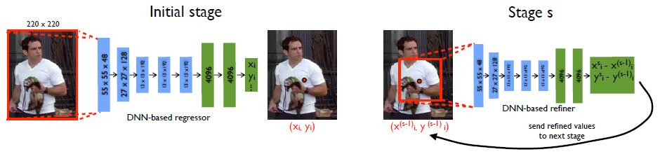
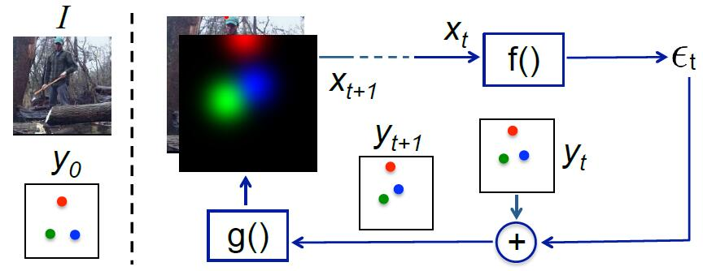
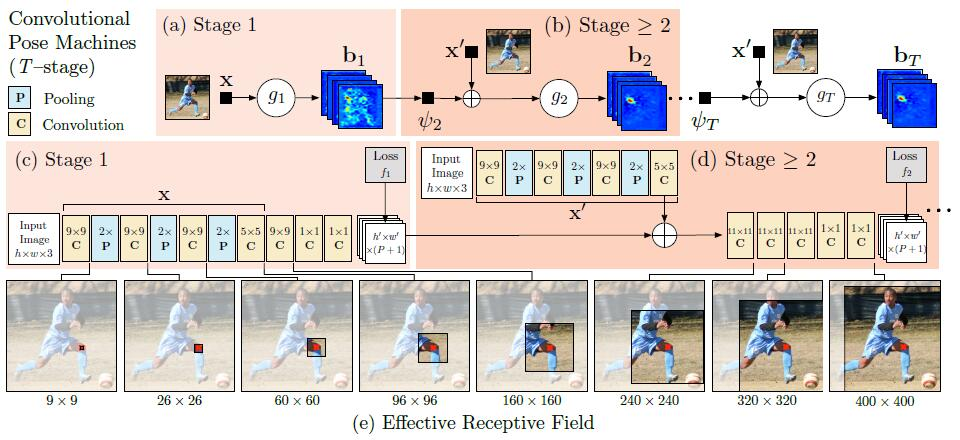
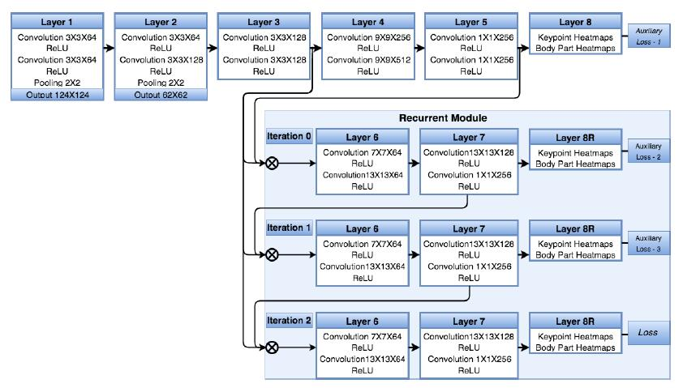
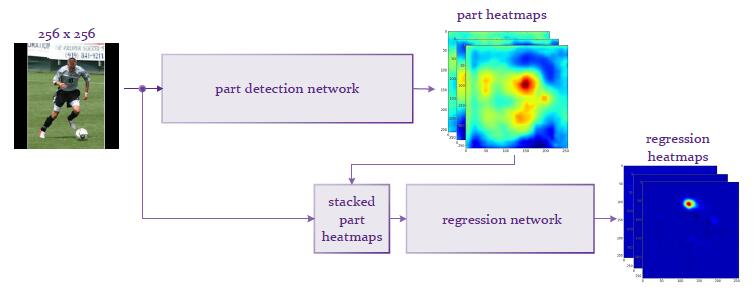
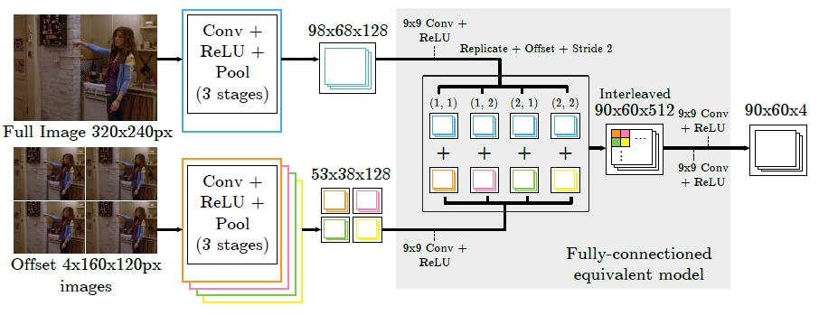
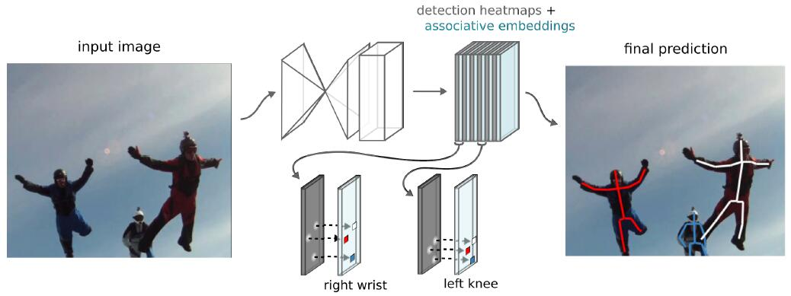
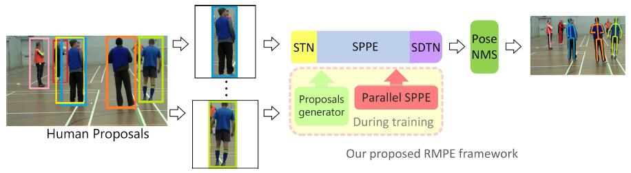

DeepPose: Human Pose Estimation via Deep Neural Networks. (2013)
The pose estimation is formulated as a DNN-based regression problem towards body joints.

IEF: Human Pose Estimation via Deep Neural Networks. (2013)
This paper propose a framework that expands the expressive power of hierarchical feature extractors to encompass both input and output spaces, by
introducing top-down feedback. Instead of directly predicting the outputs in one go, this paper use a self-correcting model
that progressively changes an initial solution by feeding back error predictions, in a process called Iterative Error Feedback (IEF).

CPM: Convolutional Pose Machines. (2016)
The contribution of this paper is to implicitly model long-range dependencies between variables in structured prediction tasks such
as articulated pose estimation. This is achieved by designing a sequential architecture composed of convolutional networks
that directly operate on belief maps from previous stages, producing increasingly refined estimates for part locations,
without the need for explicit graphical model-style inference.

Recurrent Human Pose Estimation. (2016)
This paper proposes a model regresses a heatmap representation for each body keypoint, and is able to learn and represent both the part appearances and the context of the part
configuration. The model combining a feed-forward module with a recurrent module, where the recurrent module can be run iteratively to increase the effective
receptive field of the network and thus improve the performance.

CPHR: Human pose estimation via Convolutional Part Heatmap Regression. (2016) ☻
This paper propose a detection-followed-by-regression CNN cascade. The first part of our cascade outputs part detection heatmaps and the second part performs regression on these heatmaps.

Combine with Graph model
Joint Training of a Convolutional Network and a Graphical Model for Human Pose Estimation. (2014) ☻
This paper proposes a new hybrid architecture that consists of a deep Convolutional Network and a Markov Random Field.

Human Pose Estimation using Deep Consensus Voting. (2016) ☻
This paper propose a novel approach where each location in the image votes for the position of each keypoint using a convolutional neural net.
Normal CNN Architecture
Associative Embedding: End-to-End Learning for Joint Detection and Grouping. (2016) ☻
This paper introduce associative embedding, a novel method for supervising convolutional neural networks for the task of detection and grouping.
The network outputs both a heatmap of per-pixel detection scores and a heatmap of per-pixel identity tags. The detections and groups are then
decoded from these two heatmaps.

Multi-Person Pose Estimation
Top-down Approach: first detect individual people and then estimate each person’s pose.
RMPE: Regional Multi-Person Pose Estimation. (2016)
This paper propose a novel regional multi-person pose estimation (RMPE) framework to facilitate pose estimation
in the presence of inaccurate human bounding boxes. The framework consists of three components: Symmetric Spatial Transformer Network (SSTN), Parametric Pose
Non-Maximum-Suppression (NMS), and Pose-Guided Proposals Generator (PGPG). The symmetric STN + parallel SPPE was introduced to enhance SPPE when given imperfect human
proposals.

Towards Accurate Multi-person Pose Estimation in the Wild. (2017)
Bottom-up Approach: detect individual body joints and then group them into individuals.
Associative Embedding: End-to-End Learning for Joint Detection and Grouping. (2016)
Realtime Multi-Person 2D Pose Estimation using Part Affinity Fields. (2016)